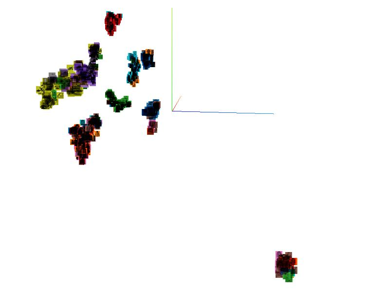
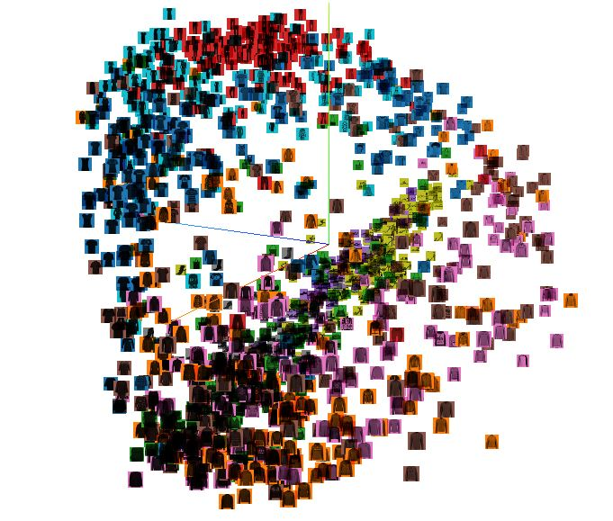
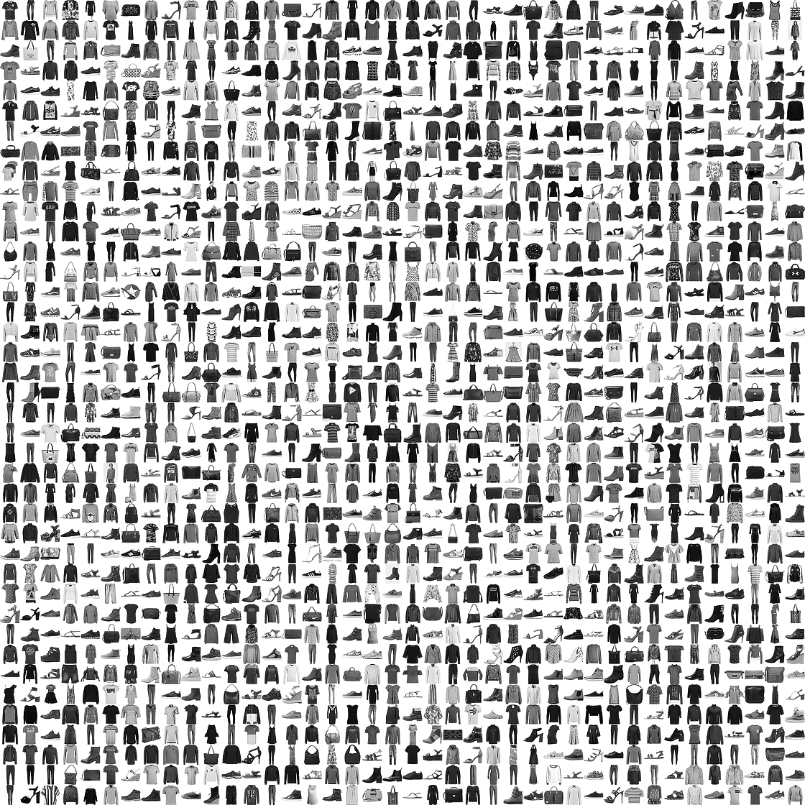

Final Report
Visual Search Based Recommendation System
Syeda Arzoo Irshad, Noah Meine, Jared VeerhoffFall 2020 ECE 4554/5554 Computer Vision: Course Project
Virginia Tech


Abstract
Many current visual recommendation systems do not allow a user to visualize the difference or similarity between images. In this project, we implement our own visual recommendation system. This project will allow a user to visualize the similarity between their input image and additional images in low-dimensional space. Our project is tailored to work with fashion items (clothes, brands, outfits), as there are many exciting applications for visual recommendation in the fashion/e-commerce domain.We use a pre-trained model in image classification based on the ResNet18 model because of its strong performance in visual recognition. We then implement transfer learning to optimize its performance with fashion items by using the DeepFashion and Fashion MNIST datasets. We implement our own algorithm to generate image feature vectors and use Spotify's Annoy library to access similar images. Finally, we provide the user with the top-N most recommended images and perform a low-deminsional visualization of image similarity using t-SNE.
UPDATE THIS SECTION
We will then compare the results of this model with another deep learning model based on the VisNet and Deep Ranking architecture. In this model the VGG16 network is combined with two parallel shallow neural networks to learn the fine-grained similarity in images. The input to the model will consist of a triplet of images – query image, positive image (closely related to the query image), and a negative image (different from the query image). The model will be trained to generate embeddings for an input image using a triplet loss based approach such that the distance between embeddings of similar images (query and positive) will be lesser than that of dissimilar images (query and negative image).
END UPDATE
We have deployed our project as a self-contained application using Google Colab. Our application achieves a high level of qualitative accuracy for image recommendations. After applying transfer learning, our model achieves a top-5 accuracy of 91% on the DeepFashion dataset (see experimental results). Our application is scalable and allows users to query similar images quickly. We aim to extend our project into a stand-alone web application.
Introduction - UPDATE THIS
Text based queries often don’t yield accurate results. For instance, one comes across an object of interest (a dress that someone’s wearing or a show piece in a store that’s not for sale). A text based search for this object on the internet can yield closely related items but may not retrieve the exact item. Visual search based systems can effectively solve this problem by allowing the user to query an image instead of a text and retrieve more accurate results. This project aims to develop a visual search based recommender system that will allow the user to input a query image and generate a list of top-N most similar images from our database.We will utilize the ResNet18 model that was pre-trained on the vast ImageNet dataset and apply transfer learning methods to retrain the network or modify the architecture (Deep Ranking) for a specific fashion items based dataset that suits our projects goals. This project finds use in applications like Pinterest where users can capture images on their phone cameras and upload it on the app to find similar images.
Approach - ADD YOUR INFO
The flowchart below demonstrates the approach we have followed to accomplish our project goals.
The technical approach we followed began with using a pretrained model (ResNet18) on the ImageNet dataset and adapting it to the fashion domain using transfer learning. To do this, we utilized multiple tools and services. We used python and relevant data processing libraries (numpy, pandas, matplotlib, etc.) to download and organize the DeepFashion dataset. Then, we used FastAI and PyTorch libraries to simiplify deep learning tasks such as generating image embeddings, performing transfer learning, and saving feature vectors from our model easily. In addition, we used cloud computing services such as Google Colab for access to optimized GPU hardware and for hosting our application. In order to manage the DeepFashion dataset, we utilized reference material from Building a Personalized Real-Time Fashion Collection Recommender.
After applying transfer learning, we evaluated the performance and cost of different models.
## ADD relevant info here about model evaluation steps and baseline models
We then selected the optimal model and produced a library of feature vectors for each image in our dataset. We compiled these feature vectors in a database of recommended images to choose from, and stored relevant image data, embeddigns, and labels. Our next step was to allow the user to obtain recommended images from an input image outside of our dataset. Given the size of the DeepFashion data set and the hardware constraints of our system, we leveraged Spotify’s open-source Annoy (Approximate Nearest-Neighbor) library. Using Annoy, we created a query tree full of feature vectors from our model. Then we used our model to generate a feature vector for a user input image, and Annoy to obtain the top-N most similar images. The last step is to utilize the python sklearn libraries’ popular t-SNE framework to generate a visualization of image similarity in low-dimensional space. We return the user a list of similar images and the t-SNE plot.
## ADD relevant info here about any other steps you took in your approaches
Obstacles- ADD ANY OBSTACLES HERE
One obstacle we faced at the beggining of the project was trying to manage the DeepFashion dataset given its large size and computational requirements. To overcome this obstacle, we utilized the refrence material listed under the approach. Another obstacle we encountered while attempting to implement transfer learning was trying to speed up the training process in order to perform more experiments. We overcame this obstacle with the help of Google Colab, which allows free access to optimized GPU hardware.
Experiments and Results
Model and DatasetIn order to perform transfer learning on the VGG16 model, we used the Fashion MNIST dataset. This dataset is well known for fashion related image classification and allows us to produce feature vectors well alongside the VGG architecture. The dataset contains a training set of 60,000 examples and a test set of 10,000 examples. Each example is a 28x28 grayscale image that contains a label from 10 possible classes. The training and test labels are from one of the following classes:
- 0 T-shirt/top
- 1 Trouser
- 2 Pullover
- 3 Dress
- 4 Coat
- 5 Sandal
- 6 Shirt
- 7 Sneaker
- 8 Bag
- 9 Ankle boot
Transfer Learning
Next, we adapted the dataset to support the base VGG16 model by adding an additional two color channels and scaling the images to 48x48 pixels using openCV methods. We then defined our base VGG16 model using pretrained weights and removed the top layer used for classification. In order to adapt the model to the Fashion MNIST dataset, we added several layers to flatten the last VGG16 output layer and classify the images into 10 classes. Below is a summary of the model that was created.
_________________________________________________________________
Layer (type) Output Shape Param #
=================================================================
vgg16 (Functional) (None, 1, 1, 512) 14714688
_________________________________________________________________
flatten_1 (Flatten) (None, 512) 0
_________________________________________________________________
fc1 (Dense) (None, 1024) 525312
_________________________________________________________________
predictions (Dense) (None, 10) 10250
=================================================================
Total params: 15,250,250
Trainable params: 7,614,986
Non-trainable params: 7,635,264
Layer (type) Output Shape Param #
=================================================================
vgg16 (Functional) (None, 1, 1, 512) 14714688
_________________________________________________________________
flatten_1 (Flatten) (None, 512) 0
_________________________________________________________________
fc1 (Dense) (None, 1024) 525312
_________________________________________________________________
predictions (Dense) (None, 10) 10250
=================================================================
Total params: 15,250,250
Trainable params: 7,614,986
Non-trainable params: 7,635,264
The next step in our approach was applying transfer learning. We used categorical (one hot) encoding for our training, validation, and test labels. In addition, we used a train/test split with a test size of 0.2. Here is an excerpt of our training script that uses the sklearn train_test_split() function.
x_train, x_validate, y_train_one_hot, y_validate_one_hot = train_test_split(
x_train, y_train_one_hot, test_size=0.2, random_state=13,
)
x_train, y_train_one_hot, test_size=0.2, random_state=13,
)
The metrics that we used to evaluate our model during the transfer learning procedure were categorical accuracy and categorical crossentropy for loss. We gathered data about the transfer learning process using tensorboard, and performed testing on the model post-transfer learning as well. Below is a complete summary of the transfer learning procedure, including plots generated using tensorboard.
Epoch 1/12
375/375 [==============================] - 23s 62ms/step - loss: 0.4312 - categorical_accuracy: 0.8467 - val_loss: 0.3378 - val_categorical_accuracy: 0.8791
Epoch 2/12
375/375 [==============================] - 23s 61ms/step - loss: 0.2597 - categorical_accuracy: 0.9059 - val_loss: 0.2599 - val_categorical_accuracy: 0.9071
Epoch 3/12
375/375 [==============================] - 23s 62ms/step - loss: 0.2212 - categorical_accuracy: 0.9183 - val_loss: 0.2496 - val_categorical_accuracy: 0.9113
Epoch 4/12
375/375 [==============================] - 23s 62ms/step - loss: 0.1972 - categorical_accuracy: 0.9269 - val_loss: 0.2621 - val_categorical_accuracy: 0.9104
Epoch 5/12
375/375 [==============================] - 23s 62ms/step - loss: 0.1799 - categorical_accuracy: 0.9353 - val_loss: 0.2461 - val_categorical_accuracy: 0.9164
Epoch 6/12
375/375 [==============================] - 23s 62ms/step - loss: 0.1655 - categorical_accuracy: 0.9399 - val_loss: 0.2256 - val_categorical_accuracy: 0.9213
Epoch 7/12
375/375 [==============================] - 24s 63ms/step - loss: 0.1519 - categorical_accuracy: 0.9447 - val_loss: 0.2367 - val_categorical_accuracy: 0.9214
Epoch 8/12
375/375 [==============================] - 23s 63ms/step - loss: 0.1391 - categorical_accuracy: 0.9493 - val_loss: 0.2597 - val_categorical_accuracy: 0.9179
Epoch 9/12
375/375 [==============================] - 24s 63ms/step - loss: 0.1280 - categorical_accuracy: 0.9537 - val_loss: 0.2467 - val_categorical_accuracy: 0.9189
Epoch 10/12
375/375 [==============================] - 24s 63ms/step - loss: 0.1201 - categorical_accuracy: 0.9561 - val_loss: 0.2632 - val_categorical_accuracy: 0.9241
Epoch 11/12
375/375 [==============================] - 23s 63ms/step - loss: 0.1139 - categorical_accuracy: 0.9591 - val_loss: 0.3109 - val_categorical_accuracy: 0.9132
Epoch 12/12
375/375 [==============================] - 23s 63ms/step - loss: 0.1070 - categorical_accuracy: 0.9618 - val_loss: 0.2575 - val_categorical_accuracy: 0.9220
375/375 [==============================] - 23s 62ms/step - loss: 0.4312 - categorical_accuracy: 0.8467 - val_loss: 0.3378 - val_categorical_accuracy: 0.8791
Epoch 2/12
375/375 [==============================] - 23s 61ms/step - loss: 0.2597 - categorical_accuracy: 0.9059 - val_loss: 0.2599 - val_categorical_accuracy: 0.9071
Epoch 3/12
375/375 [==============================] - 23s 62ms/step - loss: 0.2212 - categorical_accuracy: 0.9183 - val_loss: 0.2496 - val_categorical_accuracy: 0.9113
Epoch 4/12
375/375 [==============================] - 23s 62ms/step - loss: 0.1972 - categorical_accuracy: 0.9269 - val_loss: 0.2621 - val_categorical_accuracy: 0.9104
Epoch 5/12
375/375 [==============================] - 23s 62ms/step - loss: 0.1799 - categorical_accuracy: 0.9353 - val_loss: 0.2461 - val_categorical_accuracy: 0.9164
Epoch 6/12
375/375 [==============================] - 23s 62ms/step - loss: 0.1655 - categorical_accuracy: 0.9399 - val_loss: 0.2256 - val_categorical_accuracy: 0.9213
Epoch 7/12
375/375 [==============================] - 24s 63ms/step - loss: 0.1519 - categorical_accuracy: 0.9447 - val_loss: 0.2367 - val_categorical_accuracy: 0.9214
Epoch 8/12
375/375 [==============================] - 23s 63ms/step - loss: 0.1391 - categorical_accuracy: 0.9493 - val_loss: 0.2597 - val_categorical_accuracy: 0.9179
Epoch 9/12
375/375 [==============================] - 24s 63ms/step - loss: 0.1280 - categorical_accuracy: 0.9537 - val_loss: 0.2467 - val_categorical_accuracy: 0.9189
Epoch 10/12
375/375 [==============================] - 24s 63ms/step - loss: 0.1201 - categorical_accuracy: 0.9561 - val_loss: 0.2632 - val_categorical_accuracy: 0.9241
Epoch 11/12
375/375 [==============================] - 23s 63ms/step - loss: 0.1139 - categorical_accuracy: 0.9591 - val_loss: 0.3109 - val_categorical_accuracy: 0.9132
Epoch 12/12
375/375 [==============================] - 23s 63ms/step - loss: 0.1070 - categorical_accuracy: 0.9618 - val_loss: 0.2575 - val_categorical_accuracy: 0.9220


Final test accuracy and loss.
Test loss: 0.26292872428894043
Test accuracy: 0.9182000160217285
Test accuracy: 0.9182000160217285
Deep Ranking
In the next stage of the project we will implement another deep learning model for image similarity that is based on the deep ranking architecture. For this project, we will implement a simpler version of the triplet sampling technique to generate the triplets. Instead of an online sampling technique, we will use uniform sampling to generate the triplets or utilize an existing dataset of triplets triplet.txt and augment it if necessary.
For the convnet segment, we will replace the AlexNet with VGG16 (similar to the Visnet architecture) in Keras and use the concatenate function in Keras to combine it with the two shallow convolutional layers. The final Ranking layer will compute the Hinge loss or a Triplet loss to train the network based on relative similarity between the triplet images.
Qualitative Results
t-SNE and PCA VisualizationCurrently, our system can support t-SNE and PCA visualizations of input data. Shown below is a sample t-SNE projection on 1600 Fashion MNIST images in three-dimensional space. Notice how groups of similar images form in the image.

Sample PCA projection of the same dataset in three dimensions.

Two-dimensional t-SNE projection created using feature vectors from our system (zoom in).

Conclusion and Future Work
In the final stage of the project, we will test the above models on different query images and generate the top-N most similar items using distance metrics like L1, L2 norm or use k-NN. The performace of We will compare the performance of the above architectures and use the best performing model in our visual search based recommender system where the user can query any input image in the fashion domain to obtain top-N most similar items from the database.References
Fashion MNISThttps://www.kaggle.com/zalando-research/fashionmnist
A Comprehensive Hands-on Guide to Transfer Learning with Real-World Applications in Deep Learning | by Dipanjan (DJ) Sarkar | Towards Data Science
https://towardsdatascience.com/a-comprehensive-hands-on-guide-to-transfer-learning-with-real-world-applications-in-deep-learning-212bf3b2f27a
Transfer Learning with Convolutional Neural Networks in PyTorch | by Will Koehrsen | Towards Data Science
https://towardsdatascience.com/transfer-learning-with-convolutional-neural-networks-in-pytorch-dd09190245ce
Embeddings Visualization with Fashion MNIST
https://github.com/markjay4k/Fashion-MNIST-with-Keras/blob/master/pt3%20-%20FMINST%20Embeddings.ipynb
Visualizing Data using the Embedding Projector in TensorBoard
https://www.tensorflow.org/tensorboard/tensorboard_projector_plugin
Learning Fine-grained Image Similarity with Deep Ranking
https://arxiv.org/pdf/1404.4661.pdf
Deep Learning based Large Scale Visual Recommendation and Search for E-Commerce
https://arxiv.org/pdf/1703.02344.pdf